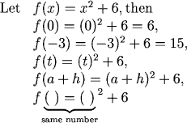
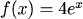
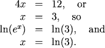
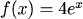
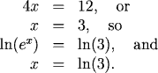

Function Notation
Using Function Notation
It is easier to say "\(f(x)\) is linear," or "\(f(x) = mx + b\)" than to say "you get \(y\) by multiplying \(x\) by some constant and then adding some other constant to your answer." The language of function notation gives a name, \(f\) for the operation, and at the same time identifies the independent variable x.
Examples

1.
2.
(Note that \(f(2+h)\) is not the same as \(f(2)+h\), and \(f(2a)\) is not the same as \(2f(a)\).)
Interpreting the Meaning of Expressions Using Function Notation
When we use function notation, it is crucial to "translate" the meaning of the notation correctly. Similar-appearing forms can have very different meanings.
Examples
 This tells the rule for forming the function f using the variable x.
This tells the rule for forming the function f using the variable x.
 This tells you to find the x value which makes y=27. In other words, solve the equation
This tells you to find the x value which makes y=27. In other words, solve the equation

This tells you to find the y value corresponding to x=3, or



1. "Translate" the following function sentences:
This tells the rule for forming the function f using the variable x. This tells you to find the x value which makes y=27. In other words, solve the equation
(to get x = 4).
This tells you to find the y value corresponding to x=3, or
2. Let

Find \(x\) so that \(f(x)=12\).
We want
We want

Practice
Question 1:
Question 2:
Question 2:
Return to Main